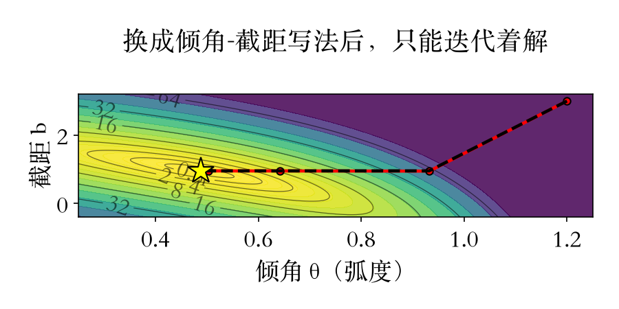
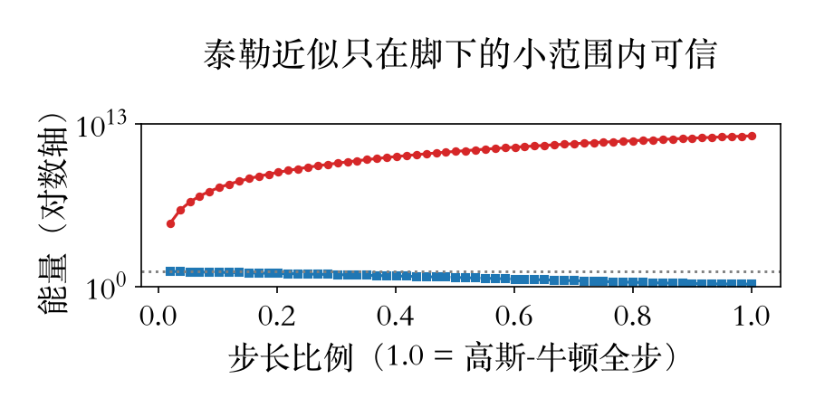
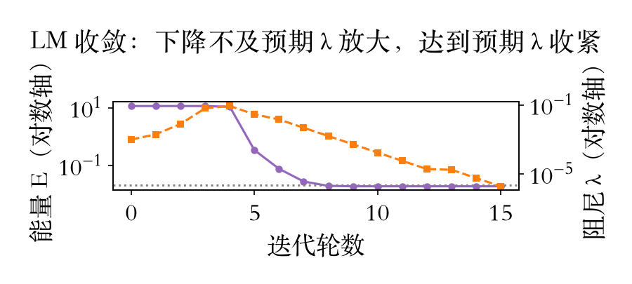

原书附录 A · 非线性最小二乘
非线性来了，先做一件事
很多视觉问题对未知参数不是线性的。
解法：围着当前估计重新线性化。
每轮算一个增量，估一步、修正一步。
本集：泰勒展开 → 两条补救 → LM。
依据：原书第 930/945 页
三步
泰勒展开：把非线性当线性解增量
减半 / 阻尼：让步子稳下来
直线会师、圆拟合验失灵
正课第三十三集
01 / 8
原书第 931 页 · 正规方程
方程没变，增量每轮重算
雅可比接测量行的班，残差接测量值的班。
正规方程壳子不变，解的是增量。
近似只在局部极小、增量很小时成立。
近似失效，能量可能不降。
依据：原书第 931 页
p ← p + Δp
J=∂f/∂p；r=测量值−函数值；近似只在局部可信
正课第三十三集
02 / 8
两条补救 · 列文伯格-马夸特
步子迈不出去，就加阻尼
线搜索：α 从 1 起逐次减半。
阻尼：C+λdiag(C) 解增量。
λ 看下降是否达到预期，自适应。
LM = 一阶泰勒 + 自适应阻尼。
依据：原书第 931 页
[C + λ diag(C)] Δp = d
C=ΣJᵀJ，d=ΣJᵀr；λ=0 回到高斯-牛顿
正课第三十三集
03 / 8
实验设计 · 直线与圆
同一个问题，换一种写法
直线 16 内点：y = x·tanθ + b。
与 (m,b) 同一能量面，最优解不变。
圆拟合 12 点：残差 = 距离 − 半径。
对圆心非线性，半径项线性。
依据：本集实验

直线轨迹：黑虚线=高斯-牛顿，红实线=列文伯格-马夸特，★=线性最小二乘解｜程序生成，未用教材或论文原图
正课第三十三集
04 / 8
失灵双形态
预测说降，实测爆涨
直线远起点：预测剩 0.31，实测 58.5。
剩余能量被低估 190.8 倍。
圆 GN 第 4 步：能量涨 11 个数量级。
30 轮 12 次上升，停在退化解。
依据：本集实验
两个形态
直线能量 694.4 → 58.5
圆能量 16.4 → 1.13e12
GN 30 轮：12 次上升
正课第三十三集
05 / 8
两条补救同台
减半十八次，阻尼一步
爆升步：高斯-牛顿全步长度 6.39e5。
减半 18 次，α*=3.815e-6，实走 2.44。
阻尼 λ=1e-3，步长 0.661，一步稳降。
减半事后补救，阻尼事前稳健。
依据：本集实验

同一爆升步的 α 扫描：红实线=实测能量，蓝虚线=泰勒预测，灰点线=当前能量｜程序生成，未用教材或论文原图
正课第三十三集
06 / 8
收敛 · 会师
不及预期就放大，达到预期就收紧
圆拟合 15 轮收敛：(a,c,r)=(0.030,0.019,1.977)。
前 3 轮拒绝升 λ，第 4 轮低增益再升。
远起点 LM 也滑谷，起点依然要紧。
直线三起点与 OLS 一致，相对误差 5.75e-13。
依据：本集实验

圆拟合 LM 收敛：紫实线=能量 E，橙虚线=阻尼 λ，灰点线=真参数处能量参照｜程序生成，未用教材或论文原图
正课第三十三集
07 / 8
指路 · 作业 · 下一集
这条线闭合了，下一站神经网络
起点太远：补二阶项的牛顿型可能更快。
内存紧：拟牛顿（BFGS）只要梯度。
作业：自己算雅可比，跑 LM 记预测/实测。
下一集：神经元、权重与激活函数。
依据：原书第 931/235 页
下一集
原书第 5 章：深度学习
神经元：加权和 + 激活
为什么一弯就有非线性
正课第三十三集
08 / 8